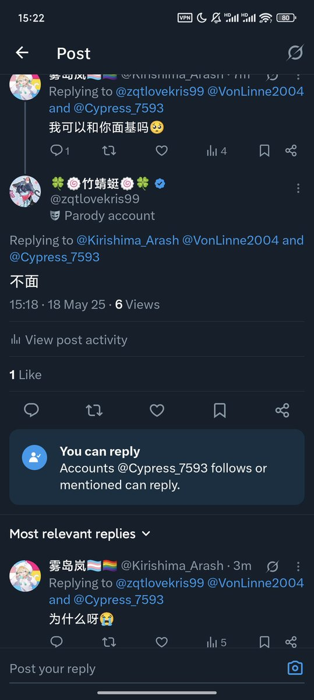

🍀🍥竹蜻蜓🍥🍀
@zqtlovekris99
拉黑了，别给竹蜻蜓扣帽子好像是他爱骂人一样。影响他情绪的东西，都给我滚远点。

🍀🍥竹蜻蜓🍥🍀
@zqtlovekris99
我真不懂你们asd什么脑子逻辑，我拒绝的还不够明确吗？我说的是缅甸语吗看不懂吗？还在那舔着脸问为什么，然后我不回他吧还跑来QQ私聊问，但凡有点情商呢，给台阶不下非要往死里追问，非逼我把那点不好听的话讲出来。本来最近就焦虑，不想理她吧还一直问问问，给我整躯体化了。这我就不追究了，确实是 https://t.co/ECcdiab57z